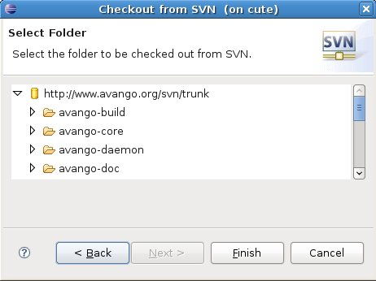
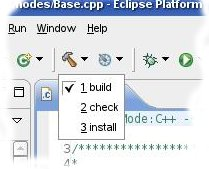
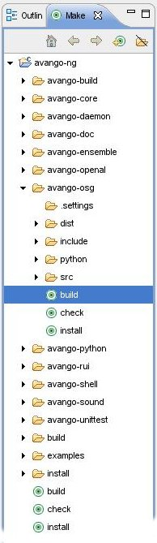

If you would like to run a specific AVANGO application or perform benchmarking tests, you could download the self-installing AVANGO Run-time Environment. The following examples are included into the package:TBA
The Windows version is available here: http://avango.org/avango-win-installer.
For AVANGO developers, it is recommended to compile AVANGO locally. This can be done in the following steps.
The following software modules have to be downloaded, installed and configured prior to AVANGO compilation:
AVANGO source code can be downloaded using an SVN client from the following address:
http://avango.org/svn/trunk
The AVANGO build system uses SCons. A list of all available build options is shown using the following command in the AVANGO source directory:
scons --help
scons DEBUG=yes CXX=g++
PREFIX = '/opt/avango' LIBRARY_PATH = '/opt/openscenegraph/lib' INCLUDE_PATH = '/opt/openscenegraph/include' BUILD='build' DEBUG=True OPENSCENEGRAPH=True
The AVANGO build system assumes that all required files are in the default search paths. These search paths can be extended with the appropriate build option, e.g. LIBRARY_PATH for the search path for libraries. In the example above we extended the search path to contain a OpenSceneGraph installation. Multiple paths are separated with an ':' on Linux and a ';' on Windows.
Note that the AVANGO build system does not differentiate between different search paths for different libraries.
To build AVANGO, issue the following command in the source directory:
scons
This will automatically build and execute test programs that verify correct behavior. All tests should run without failure. If some tests do fail on your setup, please contact the development team. Alternatively, you can use Eclipse or Microsoft Visual Studio 2008 IDE (see sections 3 and 4 of this document).
The AVANGO build system uses the PREFIX option as the path where AVANGO should be installed. If your localdefs.py file contains the following line:
PREFIX='/usr/local'
your files will be installed under '/usr/local'. Note that this is also the default location used if this option is omitted (even under Windows).
To install issue the following command in the source directory:
scons install
If the installation directory is not in your default search path, you need to set both the library and the Python search path. If you installed AVANGO under '/opt/avango' the following commands can be executed to run AVANGO (this examples assumes that you are using version 2.5 of Python):
export LD_LIBRARY_PATH=$LD_LIBRARY_PATH:/opt/avango/lib export PYTHONPATH=$PYTHONPATH:/opt/avango/lib/python2.5
If your are using Windows and installed AVANGO under 'C:\AVANGO' you can use the following commands:
set PATH=%PATH%;C:\AVANGO\lib set PYTHONPATH=%PYTHONPATH%;C:\AVANGO\lib\python2.5
You can now e.g. start the Snowland demo in the examples directory. Change to that directory and execute the following command:
python snowland.py
Before using Eclipse, you should install the prerequisites and obtain Avango (see section 2). We support loading AVANGO into an Eclipse development environment. In the repository you can find the appropriate project files (.project and .cproject) on top-level. Currently the Eclipse support is organized in a way that the whole AVANGO software is managed in one Eclipse project. As a start we recommend to install the following environment:
With this you can check out AVANGO by creating a new project via File > New > Other... > SVN > "Checkout Projects from SVN". Use repository location shown in the image below and select the trunk directory.

Note: For the initial checkout it might be better to deactivate the Project > Build Automatically option in advance to avoid building the project locally without using your individual environment defined in localdefs.py.
First, ensure that all additional required libraries are installed on your system (see section 2). You can build the project by using one of the build configurations that will appear right after the checkout.

The currently selected build configuration can also be triggered using the CTRL + B keyboard shortcut. For each submodule (e.g. avango-osg) own make targets exist with which you can invoke a more specified build process (see image below).

Developers submitting code are encouraged to follow the AVANGO code conventions. Therefore go to Window > Preferences > C/C++ > Code Style and import the following file: Eclipse_AVANGO_C++_Code_Style.xml.
First, you should download and install the Microsoft Visual Studio 2008 (also known VC 9) and the Visual C++ 2008 Feature Pack for C++ TR1 support.
You should also install the prerequisites and obtain Avango (see section 2).
You should make sure, you have included the locations of Python, Python/scripts, OpenSceneGraph/bin, your compiler and linker (they usually reside within */VC/Bin) to the system's PATH environment variable.
Since SCons does not support VC 9 at the moment, you need to set up a small workaround:
BINARY_PATH = os.environ.get('PATH')
Keep in mind that SCons will take complete control over the compilation even with the generated project files. So do not make custom changes to the project files thus wasting your time. On a fresh checkout there will be just an empty solution file. You should generate the project files by invoking:
scons vcprojects
Now you can open the solution file avango.sln, which resides in the top directory of AVANGO, and copmile the projects.
Install avango as usual using
scons install
The following batch file is an example how to start a python shell with a proper environment:
REM Do NOT use quotes in PYTHONPATH set PYTHONPATH=C:\PATH_TO_AVANGO_NG\install\lib\python2.5 set PATH=%PATH%;C:\PATH_TO_AVANGO_NG\install\lib;C:\Python25;C:\Program Files\OpenSceneGraph\bin;C:\Program Files\boost\boost_1_35_0\lib python